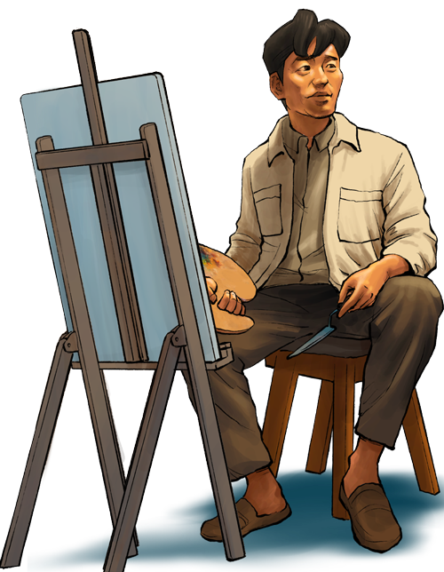
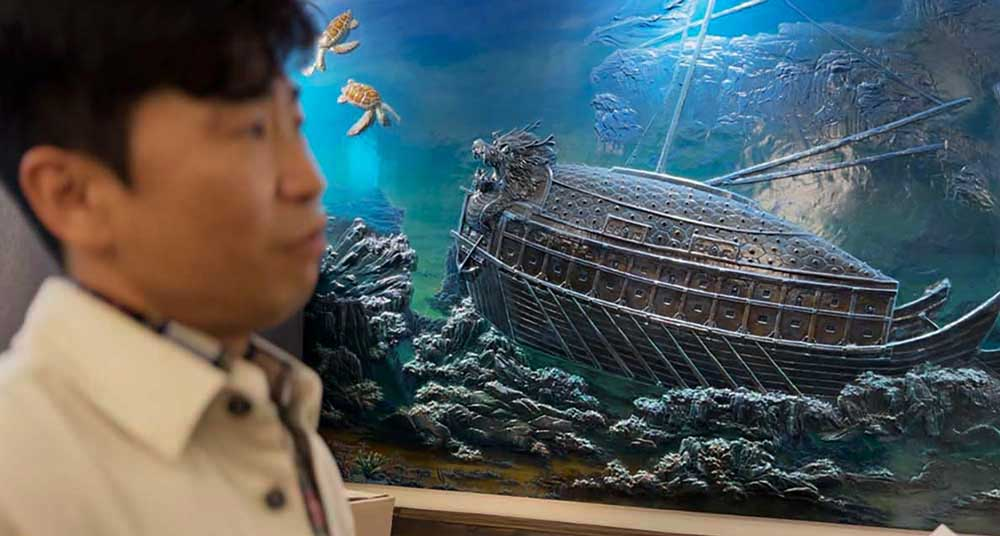
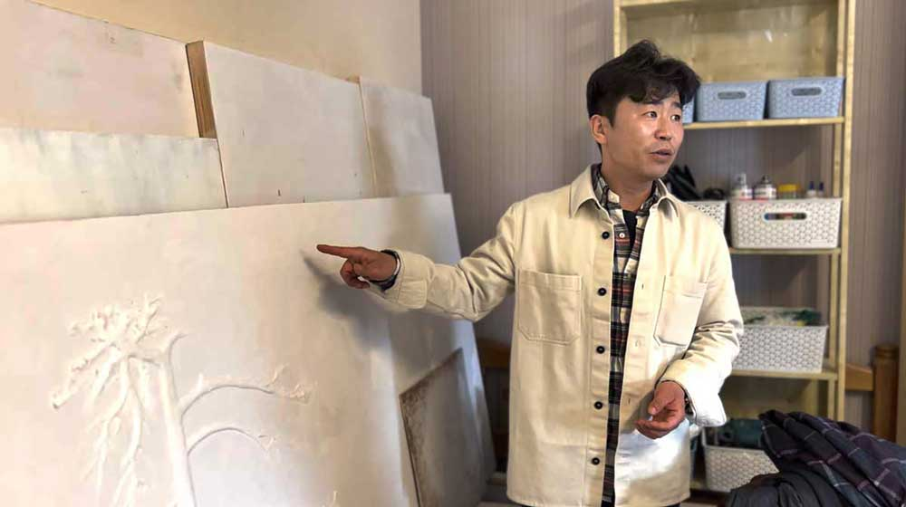
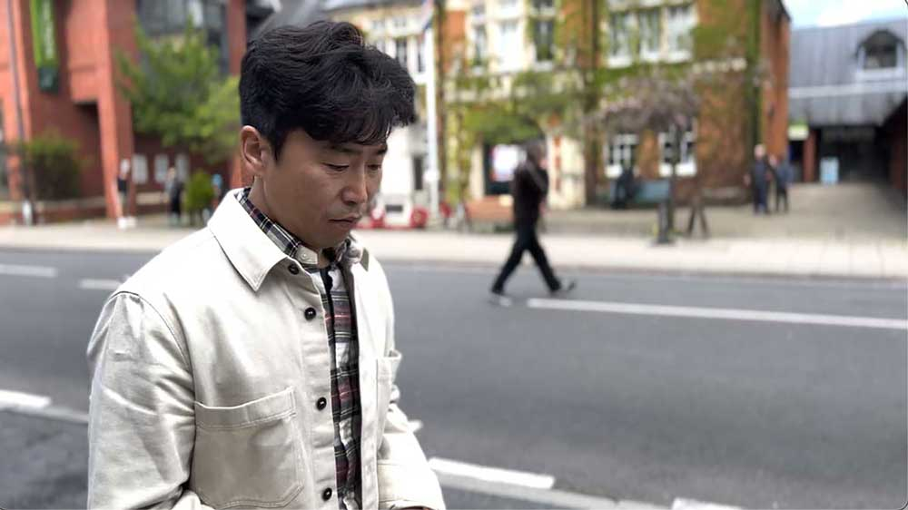
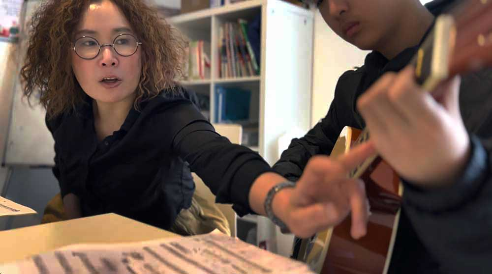
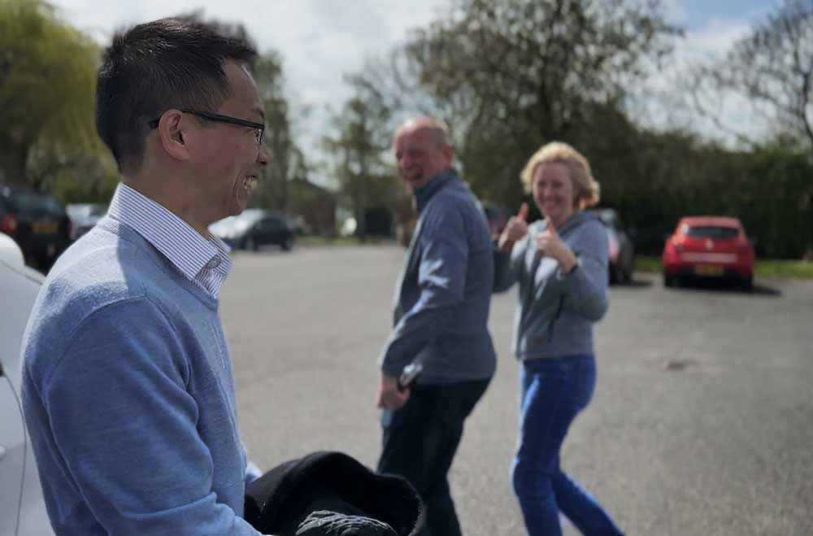

‘If I don’t have a dream,
what on Earth is the point of living?’
Three North Korean immigrants in the UK talk about their escapes and dreams.
By Seo Hye Jun and Jamin Anderson for RFA Korean
Jan 18, 2024
New Malden in southwest London is one of the largest Korean enclaves in all of Europe. It has all the trappings of Koreatowns the world over: a high concentration of Korean restaurants, businesses tailored to Korean speakers, and even non-Korean “tourists” from other parts of the city, looking for something a little different.
Ethnic enclaves like New Malden are full of immigrants who left their home country for one reason or another to try to make it in a new country, and while most of the 20,000 ethnic Korean residents there are first-, second- or third-generation immigrants from South Korea, there are about 700 New Malden residents who are from the North.
Though they are no longer living under the repressive North Korean government and have resettled in a new land, many are still struggling to find their place in the world, but some remain steadfast in pursuit of their dreams.

Dreaming on canvas
On most days, Lee Myung-gwan wakes up in his second floor studio apartment above a Korean restaurant, puts on his construction work clothes, climbs down the creaky stairs and heads off to the job site.
Construction work may pay the bills, but 40-year-old Lee’s passion is for art.
One of his masterpieces, a 3D painting titled “Turtle Ship” that took two years to complete – with painstakingly carved wood and other solid media – hangs between a refrigerator and boxes of ingredients in the restaurant below.
The painting depicts two turtles swimming near a “turtle ship,” a Korean warship known for its armored roof that was used against Japanese invaders during the Imjin War in the late 16th century. It has become a symbol of Korean independence – and in a way, Lee’s own freedom.
“There are two turtles over there. One turtle represents the unknown me in my heart and the other turtle represents me searching for my ego in reality,” said Lee, who goes by the artist name Surl Lee.
Though he aspires to have his work hung in galleries and museums, the humble display has become a metaphor for how his life in the U.K. has turned out so far; he has escaped his repressive homeland and made a life for himself in a new country, but he isn’t yet as established as he’d hoped he would be.
Lee’s passion for art is hereditary, he explained.
“My grandfather was a potter in North Korea,” he said. “I was naturally exposed to a lot of pottery from a young age. I even drew along while looking at my grandfather’s collection of work. That’s why back then, I used to think that when I grew up, I wanted to become a great artist.”

‘I can’t live in this country’
Lee first escaped from North Korea at age 16, in the winter of 1997.
It was the height of the Arduous March, the term used by North Koreans to describe a 1994-1998 famine that claimed hundreds of thousands of lives. According to some estimates, more than 2 million people – about 10% of the population - died.
Lee fled to China to look for better living conditions – and his mother, who had escaped previously. But he was caught by Chinese authorities and sent home against his will.

He spent the next year in a labor camp, digging out a riverbed to prevent flood damage.
“I was going through such a difficult time in prison, and so I asked myself, ‘Is it a crime to go look for my mother?’ and ‘I’m still a minor,’ There were a lot of feelings of animosity like this.”
“So, I thought, ‘I can’t live in this country. I have to get out somehow.’”
Upon Lee’s release, he was branded with a criminal record and considered by society to be a traitor, so there was no way that Lee could even hope to be allowed by the government to pursue a career in art.
To stay would have meant menial jobs and a bare-bones existence, he explained.
“Even if I were to live in that country, it wouldn’t feel like I'm actually breathing,” said Lee. “I would have to live under surveillance all the time. What hope could I have living in a country where I can't do what I want?”
About a year after his first attempt, he crossed the border into China again - and eventually moved to Britain in 2014.

Loneliness, prejudice
It's now been nearly 10 years since he landed in London with the dream of becoming a painter, but he still does manual labor. Facing numerous barriers, he has not been able to break into the London art scene.
“I met a gallery director, and the more we talked, the more it stung. They told me I was not qualified,” said Lee. “They said that people would only recognize me if I met certain qualifications, such as a diploma or a lot of experience.”
But his biggest battle is with extreme loneliness, he said.
“When I tell people I am from North Korea, people start off immediately prejudiced,” said Lee. “From that point on, it’s like a wound that I am not even aware of. Every time I meet people though, that’s how the conversation goes.”
“I want to live as an artist, but I am afraid that my dreams are fading away in the face of poverty,” said Lee. “People call me thoughtless and immature. They ask ‘Why are you still dreaming, as if you were playing like a child at this age? Why are you still dreaming when you are already 40 years old?’”
He paused and smiled.
“There is meaning in life only when I have the will to live and the desire to achieve it. If I don’t have a dream, what on Earth is the point of living?”
He picked up a carving knife and began cutting materials for his next masterpiece.
Musical freedom
About a 30-minute drive from New Malden, in the suburb of Molesey, guitarist Jeon Yeyoung makes a cappuccino in her kitchen on the second floor of a red-bricked apartment building. She adds a bit of honey, and this is how she starts her day.
Classical guitars line the walls of her living room, and several of her friends have come to visit her on this day.
One comments how relaxed she seems.
Jeon laughs. Before she left North Korea to pursue her musical dreams, that was not a feeling she was familiar with.
“In North Korea, it was like ‘Relaxed? What does that mean?’” she said. “I can’t imagine leisure, relaxation or anything like romance. That kind of thing does not fit in North Korea.”
Jeon was the youngest daughter to a family with a good background. In North Korea, loyalty to the state and its leadership are calculated across several generations and people are given a sort of caste-like categorization called songbun.
Given her relative privilege, she was allowed to learn music. She started with the gayageum, a traditional Korean 12-stringed instrument, but the first time she saw her older brother playing the guitar, she fell in love with the six-stringer.
“I met my first guitar teacher when I just turned 10. Every word the teacher said got my heart beating,” she said. “He told me, “I will make you the best guitar player in [North] Korea!’”
This is how her dream started, she said.
“Do children in North Korea have dreams? No. But with those words, it was the first time that I had an expectation that I would make something of myself,” she said. “That small seed has now become my dream.”
But even though she was talented and showed promise, she was still limited in North Korea.
Jeon is playing Romance D’Amour.
Jeon’s dream was further cemented the first time she heard her guitar teacher play “Raindrops,” a song composed by renowned U.S. guitarist George C. Lindsay. But North Korean musicians are forbidden from playing anything that does not glorify the country or its leadership, at least publicly.
“The teacher wouldn’t give me the sheet music for ‘Raindrops.’ He told me, ‘Don’t even think about learning it,’” she said.
“But I thought this song was so pretty that every time I went to the teacher, I asked, ‘Please play that song,’ and I played it as I heard. I kept memorizing it. I went home and copied what I heard.”
Water in the desert
The song carries special meaning for her.
“It felt like water drops in the desert. In a waterless desert, a single drop of water has tremendous power. When you feel thirsty, the most powerful thing is water.”

As an artist, she yearned to play whatever she wanted to. She yearned for freedom.
At the age of 17, Jeon was all set to join the prestigious music propaganda team, but instead was suddenly assigned to farm labor in the countryside.
Jeon did not want to give up her dreams of becoming a talented guitarist, so when her family was sleeping, she ran away from home, running breathlessly into the night.
She escaped the country and eventually arrived the U.K. penniless in 2008. To pay her university tuition, she had no choice but to take jobs doing the same kind of menial work that she had run from.
She cleaned hotels and helped out at beauty salons and the hard work took a toll on her hands, giving her swollen, achy joints. This made it difficult to practice guitar.
Jeon recalls the moment she had had enough of being told what to do. She was cleaning the office of the hotel where she worked.
“One day, the manager, her name was Amanda, she told me to clean the car park where there were a lot of cigarette butts scattered about,” she said.
“So I told her, ‘When you first signed the contract, didn't you say it was for office cleaning?’ But she said she can tell me what to do because she is the manager,” Jeon said, her voice getting louder and faster as she recounted the tale.
“I knew the word ‘labor exploitation’ in Korean, but I didn’t know the word in English,” she said. “I used to use an electronic dictionary. I said to Amanda, ‘You wait,’ and took an electronic dictionary from my backpack and said, ‘Exploitation!’”
This was the first time that she had mustered up the courage to speak up for herself.
After much hard work and study, Jeon earned a master's degree in classical guitar from the prestigious Guildhall School of Music and Drama.
But Jeon said she actually felt sad when it was all over.
“After graduating last year, I thought I would be free now, but slowly, in my mind, I sometimes think, ‘I didn’t do anything good for my parents, why was I born like this, why did I come out like this?’”
These guilty feelings that she had suppressed over many years finally burst out in a way that she was not able to handle on her own. She needed a place to share her feelings with likeminded people.
This is how she found Connect: North Korea, a nonprofit organization that supports people who have escaped North Korea and settled in the U.K.
She had previously been avoiding escapees, and even other Koreans, but now she teaches guitar lessons to children of other North Koreans through the organization.
“In the past, I wanted to forget that I came from North Korea. Maybe I was pretending,” she said. “But if I think about it, we North Korean people have a kind of pain. I also have a heartache. Would you say this is how North Koreans feel when they view other North Koreans?”
Political freedom
About a three-and-a-half hour drive to the northwest of New Malden is Denton, a town in Greater Manchester that Timothy Cho hopes to represent in the district council.
Cho, a 34-year-old candidate for the Conservative Party, is walking from house to house to encourage people to vote for him in the next local election.
Although he has lost in multiple elections, simply running is a victory for Cho.
“I experienced a dictatorship system and did not know the meaning of elections,” he said. “But when I came here, I could become a candidate and run for office. … Each vote is very precious.”
Cho’s story started half a world away, living on the streets of his North Korean town as a kotjebi, or flower swallow, the Korean term used to describe homeless beggar children.
His parents had fled the country, leaving him behind to fend for himself – and he was branded as a traitor because of what they did.
Cho was kicked out of school, forbidden from joining the military, and had to eke out a living without even a roof over his head.
“At that time I was thinking, ‘No matter what I do in this country, in the end, I will be the child of a traitor and so will my children,’” said Cho. “I made up my mind at that time and escaped North Korea.”
Over the next few years, Cho escaped to China and was forcibly repatriated and sent to prison – four times.
Eventually the cycle was broken when he finally made it to the U.K. in 2008.
The Ark
Cho’s mental health was suffering when he arrived, but there were people who would help him recover in the new community that he would eventually call home.
In a two-story house located in a quiet residential part of Denton is a shelter called the Ark. Even though Cho is busy campaigning, he stops by and shares a warm meal with the people who helped him early on.

“I still come here often. The people here are like family to me,” he said. “These people pray a lot for the Korean Peninsula.”
All told, about 3,000 North Korean escapees live in the U.K., the largest community of North Korean diaspora in Europe.
Cho stayed at the Ark when he was a college student. He said the staff and others who were staying at the shelter taught him, a lonely escapee, the meaning of family.
Initially he had hoped to become a dentist, but one day he came across a video featuring another escapee who aspired to learn English and tell the world about North Korea’s human rights abuses.
It was then that all the pain of his past became overwhelming, and he decided to become an activist.
“I can’t wait to see North Korea open,” he said. “I wish that the North Korean people could meet a leader who properly serves the people, allows them to freely engage in market economic activities, and allows travel between South and North Korea.”
Now this one-time beggar child is trying to represent the people in his community – an impossibility if he was in North Korea.
The people of Denton South went to vote on May 4, but even that day, Cho was busy going from house to house asking people to vote.
A couple walked past him and gave him encouragement.
“I voted for you,” one of them said.
Early in the vote count it appeared that Cho had a chance at winning a council seat. He was neck-and-neck with the leading Labour Party candidate.
At 2 a.m., the results were finally announced: "Cho, Timothy. Conservative Party candidate, 666." It was not enough to win a seat. He ranked fourth, behind three Labour Party candidates.
Still, he was not downcast.
“Whether I win or lose, I have no regrets about this election,” he said. “I am grateful, and the challenge will never stop.”